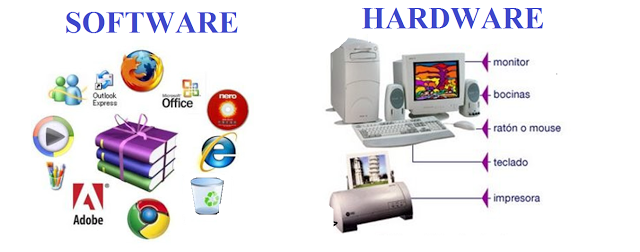
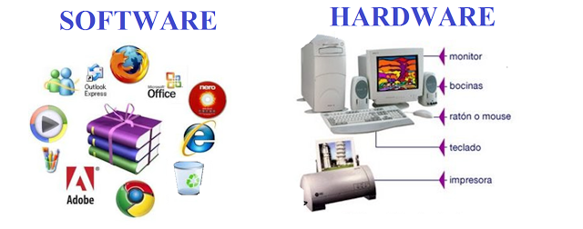

Elementos de un sistema de informacion computacional
Equipo computacional:harware necesario para que el sistema de informacion funcione,integrado por computadoras y equipo periferico conectados a ellas.

Recursos humanos:son las personas que interactuan con el sistema de informacion suministran datos o utilizan el sistema para generar datos.
Fuente:Son los datos e informacion que se introduce en el sistema, es decir,son las entradas requeridas para que el sistema informatico funcione.
Programas:Software ejecutado por la computadora, el cual procesa la informacion de entrada para generar los resultados esperados.
Telecomunicaciones:Abarca el software y el hardware que permite la transmision en forma electronica de texto e imagenes,entre otros.

Politicas y reglas de operacion:Aplicadas a los procedimiento y mecanismos para hacer una aplicacion de computadoras trabaje de acuerdo con estas o regir la parte funcional del proceso administrativo de la empresa.

Politicas y reglas de operacion:Aplicadas a los procedimiento y mecanismos para hacer una aplicacion de computadoras trabaje de acuerdo con estas o regir la parte funcional del proceso administrativo de la empresa.